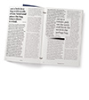

Gabby DiPietro, Junior Type IV (Spring 2018)
Remy Usman, Junior Type IV (Spring 2018)
This course will present eclectic content: artist videos, documentaries, video snippets, past student videos, etc. The most part of the semester will be dedicated to the visual organization and writing of a script that you will be directing at the end of the semester. On the occasion of this fourth typography class, the semester-long assignment opens up for more authorship and autonomy.
Goals
Requirements
Credits
2 credits
Attendance
Attend to all classes is essential. Un-excused absences will result in faults to the participation evaluation. Keep me updated if you need to miss class. In any case, the students are responsible for being up-to-date. Being late will be perceived the same way.
Grading Criteria
 Grading grid download link
Grading grid download link
Evaluation
You will be evaluated according to your overall engagement in the projects. Your active participation during the semester will also be taken in account.
Evaluation
You will be evaluated according to your overall engagement in the projects. Your active participation during the semester will also be taken in account.
Assignment Criteria (General)
Schedule